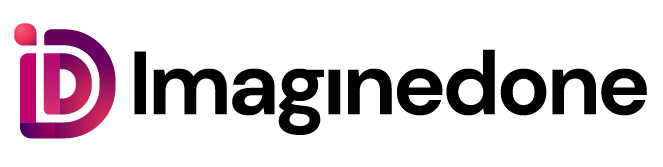
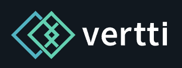

Tecnologia que resolve o problema certo.
A Yanotec entra junto com a sua equipe para entender o gargalo, desenhar a solução e construir o software que faz o processo andar. Sem camada extra de complexidade.
O que fazemos
Frentes diferentes, um objetivo: processo funcionando.
Atuamos como consultoria quando o problema ainda não tem nome, como software house quando a solução precisa ser construída, e alocamos especialistas quando o que falta é gente qualificada dentro do seu time.
Diagnóstico de processos
Mapeamos o fluxo real da operação, medimos onde o tempo se perde e priorizamos o que dá retorno primeiro.
Automação e integrações
Conectamos os sistemas que já existem e eliminamos o trabalho manual que ninguém deveria estar fazendo.
Software sob medida
Web, mobile e painéis internos desenvolvidos do zero quando nenhuma ferramenta de prateleira resolve.
Portais e aplicativos
Canais digitais para cliente, parceiro e time de campo, pensados para quem vai usar todos os dias.
Dados para decidir
Indicadores organizados em um lugar só, para a gestão parar de decidir por intuição e planilha solta.
Infraestrutura e nuvem
Ambientes organizados, backup que funciona e custo de nuvem sob controle, sem surpresa na fatura.
Equipe especializada alocada
Quando falta gente qualificada, colocamos profissionais da área certa atuando junto ao seu time, com a responsabilidade técnica do nosso lado.
Suporte e evolução contínua
Depois da entrega seguimos por perto: ajuste, melhoria e resposta rápida quando a operação precisa.
Treinamento do time
Capacitação prática nas ferramentas e no novo fluxo, para a equipe seguir sozinha depois que a gente sai.
Quem já contou com a gente
Empresas que confiaram o processo à Yanotec.



Como trabalhamos
Um caminho curto entre conversa e entrega.
Escuta
Conversa com quem opera e com quem decide. Nada de diagnóstico feito de fora.
Desenho
Escopo, prioridades e o retorno esperado de cada etapa, no claro.
Construção
Entregas em ciclos curtos, com a equipe usando desde a primeira versão.
Acompanhamento
Suporte, ajuste e evolução depois que a solução entra no dia a dia.
Por que a Yanotec
Perto o suficiente para entender, técnico o suficiente para entregar.
Nossa equipe é enxuta por escolha: gente dedicada, tecnicamente competente e que trata o seu processo com o mesmo cuidado que teria com o próprio. Cada projeto recebe atenção integral — nada de fila, nada de aprendiz aprendendo no seu tempo.
Começa pelo problema, não pela ferramenta
A tecnologia entra depois que o processo está entendido — às vezes a resposta é simples e barata.
Um time só, do diagnóstico ao código
Quem conversa com você é quem constrói. Nada se perde na passagem de bastão.
Escopo e prazo ditos com clareza
Você sabe o que vem em cada etapa e quanto custa antes de começar.
Conte-nos qual é o seu gargalo. Vamos achar a solução.
Agende uma conversa com um de nossos especialistas: primeiro entendemos a sua necessidade, depois falamos de tecnologia. Sem compromisso.